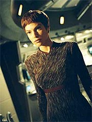
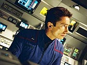
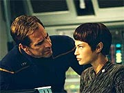

|
MANCHETE
DO EPISDIO
Velha
premissa de Jornada usada
em bom termo para os personagens
Episdio
anterior | Prximo
episdio
Sinopse:
Enquanto a tripulao est toda desacordada, T'Pol registra em seu dirio o que parece ser o ltimo registro da Enterprise. A nave est em curso direto com um buraco negro, e a tripulao parece ter sido estranhamente afetada por esse objeto astronmico. Sozinha, embora imune, a Vulcana no pode fazer nada para salvar a nave.
Em seu registro, ela conta que a crise comeou dois dias atrs, quando Archer decidiu marcar um curso para estudar um buraco negro. Centenas desses objetos j haviam sido estudados pelos Vulcanos, mas nenhum deles pertencia a um sistema trinrio -- da o interesse da Enterprise por ele.
Para fazer a aproximao mxima, a nave teve de seguir em fora de impulso, o que deixou a tripulao com poucos afazeres durante os dois dias de viagem. Archer aproveitou a ocasio para pedir a Trip que desse um jeito em sua cadeira na ponte, que aparentemente estava muito desconfortvel.
Enquanto isso, Reed comeou a trabalhar num novo protocolo de segurana, capaz de colocar a nave toda em prontido para uma emergncia ttica em caso de ataque inimigo. Hoshi conseguiu ocupar temporariamente a posio do Chef, que esteve doente e no podia mais preparar as refeies da tripulao.
Archer aproveitou o tempo livre para refletir mais sobre o que escrever no prefcio de uma biografia de seu pai. O editor havia pedido uma pgina de texto ao capito, mas Archer sentiu dificuldades em colocar algo relevante sobre seu pai em to curto espao.
 T'Pol continuou trabalhando nas leituras emanadas do buraco negro. Ela iniciou os estudos na ponte, mas logo decidiu ir trabalhar em seus aposentos, em razo do barulho que Trip estava fazendo para corrigir as imperfeies da cadeira do capito.
Na enfermaria, Mayweather se apresentou com uma dor de cabea. Phlox, estranhamente, em vez de simplesmente receitar um medicamento, decidiu iniciar uma bateria de exames no alferes. Quando os resultados preliminares no resolveram nada, o mdico tomou uma deciso ainda mais inusitada: fazer uma cirurgia exploratria no crebro do piloto.
E ele no foi o nico a comear a agir estranhamente. Aos poucos, conforme a Enterprise se aproximava do buraco negro, todos os tripulantes, exceo de T'Pol, comearam a agir de forma psictica. Trip ficou absolutamente obcecado com a cadeira do capito. Reed passou dos limites ao no s implementar os protocolos de segurana sem a autorizao do capito, mas tambm realizar um exerccio no agendado. O oficial de armamentos criticou duramente o capito e o engenheiro-chefe por demorarem a chegar ponte no exerccio. O episdio foi to violento que Reed e Trip quase saram no brao, sendo apartados por Archer.
No refeitrio, Hoshi insistia em fazer sempre a mesma comida, uma receita tradicional de sua famlia, e a tripulao j no aguentava mais o cardpio da alferes. Mayweather tentou fugir de Phlox, mas foi sedado pelo mdico.
Percebendo a gravidade da situao, T'Pol tentou avisar Archer, mas o capito tambm estava perdido em sua obsesso pela redao do prefcio do livro sobre seu pai. O ltimo recurso da Vulcana foi ir enfermaria, onde ela percebeu que Phlox estava tambm perturbado e prestes a abrir a cabea do alferes Mayweather no meio. Ela imobilizou o mdico com uma pina Vulcana e, analisando os testes feitos no alferes, descobriu a chave do problema: uma estranha radiao emanada do buraco negro estava afetando a tripulao.
A nica forma de salvar a todos era marcar um curso exato para longe do fenmeno, mas ela no poderia fazer isso sozinha. Algum precisaria pilotar a nave enquanto ela apontava as correes de curso a partir da estao de cincias.
Diante do impasse, e com a tripulao a essa altura toda inconsciente, foi ir aos aposentos de Archer, coloc-lo debaixo de um chuveiro gelado e convenc-lo a pilotar a nave, mesmo que ele no estivesse em condies.
Na ponte, os dois comearam a trabalhar, mas Archer estava ainda muito alterado para pilotar com tranquilidade. Suas manobras pelo disco de acreo do buraco acabaram colocando a nave num curso de coliso com um enorme fragmento de matria. No fosse pelo novo protocolo de segurana de Reed, que ativou automaticamente os canhes de fase da Enterprise pela proximidade com o objeto, a nave teria sido destruda.
Por conta da rpida reposta dos canhes de fase, Archer conseguiu concluir a trajetria para longe do buraco negro. Aos poucos, todos comearam a se recuperar, e tudo voltou aos eixos a bordo. Trip resolveu o problema na cadeira do capito, apenas baixando-a um pouco. Phlox pediu desculpas por seu comportamento. E Reed recebeu autorizao do capito para continuar trabalhando em seu protoloco de alerta.
Comentrios:
"Singularity" um episdio que j vimos muitas vezes; alguma espcie de contaminao afeta os tripulantes da nave, que comeam a agir estranhamente, colocando todos em perigo. At mesmo em
Enterprise j havamos visto algo bem parecido, com "Strange New
World". E o conceito o mesmo dos velhos "The Naked Time"
(Srie Clssica) e "The Naked Now"
(A Nova Gerao).
Apesar de ser uma das premissas mais batidas da histria de Jornada nas
Estrelas, inegvel que o episdio funciona. O grande segredo o roteiro afiado e o trabalho coerente de afloramento das caractersticas mais destrutivas dos personagens. Diferentemente do que havamos visto em
"Strange New World", em que o comportamento aberrante era simplesmente agressivo e paranico, aqui ele um pouco mais: ele consistente com as personalidades estabelecidas da tripulao.
 Quem se deu melhor com essa coisa toda foi Reed, que no s teve cenas fortes e bem trabalhadas, como mostrou grande sagacidade e competncia, mesmo afetado pela psicose gerada pela radiao do buraco negro. Sua idia do "Reed Alert" (agora j sabemos todos a origem do Alerta Vermelho, procedimento padro nos sculo 23 e 24 a bordo das naves estelares) garante uma boa lembrana do oficial, mesmo quando ele j no est mais "na ativa" para a concluso do episdio.
Archer tambm recebe uma problemtica interessante, com a tarefa de escrever o prefcio para o livro de seu pai. Seu relacionamento com Henry Archer foi uma das foras motrizes do personagem no piloto, e interessante ver esse elemento de volta srie, de uma forma discreta e ao mesmo tempo significativa. Alis, o episdio mantm boa dose de referncias a segmentos anteriores, notavelmente o drama de Mayweather em
"Dead Stop". Com isso os produtores mostram que, em termos de consistncia interna, a srie est bem servida.
Outro personagem que ganha uma abordagem vlida Phlox. Algum poderia pensar que sua inteno de abrir a cabea de Travis no passa de alvio cmico, mas a atitude totalmente compatvel com o conhecimento que temos do bom doutor, que, alm de s vezes mostrar ser um experimentalista nato, tambm extremamente curioso e possui um intenso senso de descoberta e de pesquisa cientfica. Sua inteno de "estudar" a dor de cabea do piloto parece absolutamente genuna, dada a afetao pela radiao.
Trip no vai mal, mas sua psicose particular parece no ter muito a dizer sobre seu personagem. E Hoshi bem lembrada, com seu j referido interesse pela culinria, embora sua participao tambm seja um tanto quanto reduzida.
T'Pol serve apenas como a representante da audincia no episdio -- a nica que est sbria para conduzir a histria. Por essa razo, ela mesma acaba recebendo um bom tempo de tela, mas quase nenhuma cena interessante.
 A gravao inicial da Vulcana, estabelecendo o flashback, funciona como um bom elemento para gerar uma tenso na audincia, uma sensao de perigo, logo nos primeiros minutos, o que serve para nos levar convenientemente pelos momentos mornos que se seguiro. A narrao em off serve para nos lembrar de um bom episdio da primeira temporada,
"Dear Doctor". No s pelo fato de tambm pedir uma conduo de narrador para explicar os eventos, mas tambm por relatar basicamente cenas do cotidiano da Enterprise.
O resultado disso simples. Se voc gosta da companhia dos tripulantes da NX-01, vai se divertir. Se a histria o que realmente importa, e os personagens ainda no o cativaram o suficiente, este certamente no ser seu episdio favorito.
De toda maneira, a histria razoavelmente bem construda a ponto de no levar ningum ao sono. E quem gosta de efeitos especiais tem aqui um prato cheio. As cenas do buraco negro so todas espetaculares, mas ficam um passo atrs dos momentos finais do episdio, em que a Enterprise precisa efetivamente navegar pelo disco de acreo. So imagens para encher os olhos.
A direo de Patrick Norris conservadora, mas agradvel. Ele talvez pudesse ter feito mais para retratar o estado alterado dos personagens com truques de filmagem, mas no que isso tenha feito uma falta absurda. As atuaes aqui, competentes como de costume, so mais do que suficientes.
Mas o mrito do episdio precisa ir mesmo para Chris Black. O roteirista conseguiu trazer vida aos personagens a partir de um enredo bastante modesto e de uma premissa bastante batida. Apesar dessas dificuldades, os dilogos acertam na mosca.
Citaes:
Archer - "How am I supposed to sum up my father's life in a page?"
("Como eu posso resumir a vida do meu pai numa pgina?")
Archer - "This isn't a warship, Malcolm."
("Isso no uma nave de guerra, Malcolm.")
Malcolm: "That's obvious, sir."
("Isso bvio, sr.")
Archer - "You're lucky you're a decent engineer, because you don't know a thing about writing."
("Voc tem sorte de ser um bom engenheiro, porque voc no entende nada de escrever.")
Tucker - "I'm not the only one."
("Eu no sou o nico.")
Tucker - "He makes life and death decisions every day. The last thing he needs to be thinkin' in a critical situation is; 'Gee, I wish this chair wasn't such a pain in the ass.'"
("Ele toma decises de vida e morte todo dia. A ltima coisa que ele precisa pensar numa situao crtica ; 'Eita, como eu queria que essa cadeira no fosse um p na bunda.")
Reed - "I intend to implement some long overdue changes and if the captain won't approve them, then I will go directly to Starfleet Command."
("Eu pretendo implementar umas necessrias mudanas e, se o capito no as aprovar, ento eu vou diretamente ao Comando da Frota Estelar.")
Tucker - "Why don't you go play soldier somewhere else?"
("Por que voc no vai brincar de soldado em algum outro lugar?")
Reed - "If this were a military situation you'd be taken out and shot!"
("Se essa fosse uma situao militar, voc seria afastado e fuzilado!")
Trivia:
 As filmagens aconteceram entre 23 de setembro e 1 de outubro de 2002. Todas as tomadas foram feitas nos cenrios internos da Enterprise.
As filmagens aconteceram entre 23 de setembro e 1 de outubro de 2002. Todas as tomadas foram feitas nos cenrios internos da Enterprise.
O episdio marcou a apario de um novo cenrio, a cozinha da nave.
Aqui conhecemos as razes do que viria a ser o estado de 'Alerta Vermelho'. Reed o chamou de "Sistema de Alerta Ttico".
Ficha
tcnica:
Escrito por Chris Black
Direo de Patrick Norris
Exibido em 20/11/2002
Produo:
035
Elenco:
Scott
Bakula como Jonathan Archer
Jolene Blalock como
T'Pol
John Billingsley
como Phlox
Anthony Montgomery
como Travis Mayweather
Connor Trinneer como
Charlie 'Trip' Tucker III
Dominic Keating como
Malcolm Reed
Linda Park como Hoshi Sato
Elenco convidado:
Matthew Kaminsky como Cunningham
Episdio
anterior | Prximo
episdio
|